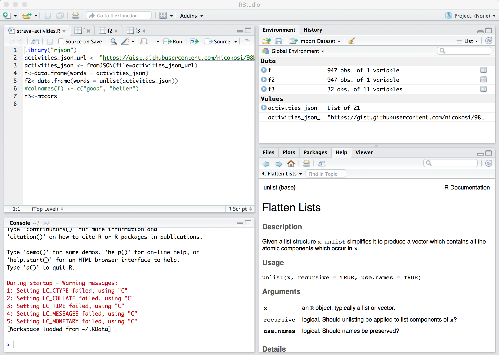
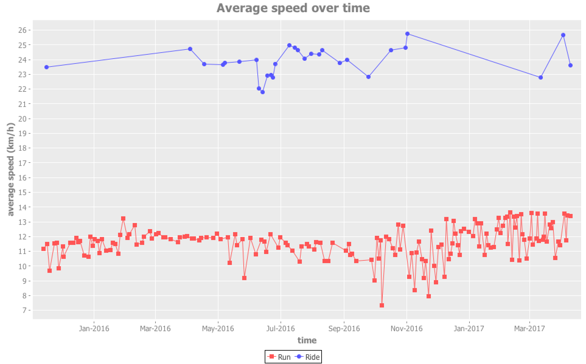

Creating Strava charts via Clojure and Incanter
I use Strava to record my jogging sessions: I can record my sessions via my smartphone and publish them. I can then review or share them.
In addition to provided Strava dashboards, I wanted to generate my own charts in order to visualize my progress.
First attempt: via R
In first tried to use RStudio, an IDE for R. I know this tool is very well-suited but I don't know much about it. After a few hours, I was not able to load and transform JSON data.

Note to myself: try again another time! 😅
Second attempt: via Clojure and Incanter
I then used another option: Incanter, which is
Clojure-based, R-like platform for statistical computing and graphics.
Basically, I had to:
- call Strava API that return activities as JSON data
- transform data: do basic conversions (meters per second into km/h, seconds into minutes)
- display charts: average speed per date
So let's dive into it!
1. Retrieve data via Strava API
The following function:
- calls the Strava API for activities with an authorization token to retrieve the 200 last activities (run/ride/swim), as a JSON object array
- converts this JSON object array to a sequence of Clojure maps:
(defn strava-activities [token]
(json/read-str (:body
(http-client/get
"https://www.strava.com/api/v3/activities"
{:query-params {:access_token token :per_page 200}}))))
2. Transform data
We can operate some data transformation, defining the following functions:
; Display speed unit in km/h (Strava API returns m/s):
(def meters-per-second->kilometers-per-hour (partial * 3.6))
; Display durations in minutes (Strava API returns seconds):
(defn- seconds->minutes [s] (/ s 60))
; Incanter can only generate charts for numerical data, so ISO dates must be converted to timestamps:
(defn- string-date->millis [str-date]
(.getTime
(clojure.instant/read-instant-date str-date)))
These functions can be applied on activities data via the "thread-last" operator (->>), which is great for function pipelines:
(->> (strava-activities token)
(map #(update-in % ["average_speed"] meters-per-second->kilometers-per-hour))
(map #(update-in % ["start_date_local"] string-date->millis))
(map #(update-in % ["elapsed_time"] seconds->minutes))
(map #(update-in % ["moving_time"] seconds->minutes)))
3. Display a chart via Incanter
The final step is to use an Incanter function to display a chart:
(defn display-chart [token]
(let [activities (get-activities token)]
(with-data
(to-dataset activities)
#_(view $data)
(view
(time-series-plot
($ :start_date_local)
($ :average_speed)
:group-by ($ :type)
:title "Average speed over time"
:x-label "time"
:y-label "average speed (km/h)"
:points true
:legend true)))))
All this code displays this kind of chart:

You can find the full code that generates several charts in strava-activity-graphs GitHub repository.
Comments !